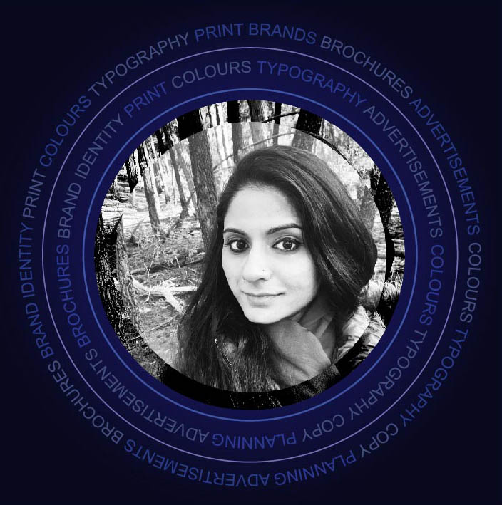

"WELCOME TO MY DESIGN WORLD"

I am very uniquely placed because I am restarting my career after a very long break.
I have completed my bachelors and masters degree in Applied Art from College of Art in 2008, one of the top colleges for Fine Arts and Applied Arts education in India. After completing my education, I worked with a leading advertising agency in India – Hub Creatives and also worked as a trainee at a multinational company called TBWA and a leading news agency in India - CNN-IBN.
In order to re-enter the job market, I recently (2021) completed Advanced Diploma in Graphic Designing from Melbourne Polytechnic. The course has definitely prepared and harnessed my skills so as to meet the demands of the current job market.
During this period, I have gained skills in application of various softwares like Adobe Illustrator, In-design, Photoshop and XD. I am also well-versed in using different mediums like watercolors, pencil colors, creating illustrations etc.
I want to create work with heart, purpose, and originality, with collaborators and for companies who value the same things and not afraid to try new things, of breaking ground and experimenting.
I have a focused approach, determination, willingness and ability to learn that if given a chance, I would definitely drive the work and responsibilities with utmost precision and hard work.
I partner with companies and individuals who value uniqueness, boldness, and thoughtfulness. I am available for freelance projects or to be adopted by an innovative, collaborative, and fun team ~ Whatever comes first!